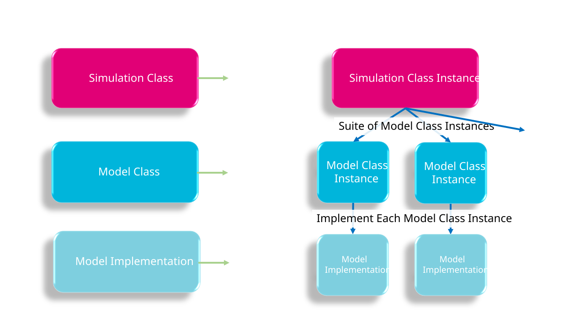

2.2 Simulation Tiers
A TUFLOW FV simulation is comprised of three simulation tiers as illustrated in Figure 2.1. Each TUFLOW FV simulation comprises:
- Tier 1 — Simulation class: A user defined simulation class instance (Section 2.2.1)
- Tier 2 — Model classes: A suite of model class instances associated with the simulation class (Section 2.2.2)
- Tier 3 — Model implementations: A selected implementation for each model class instance (Section 2.2.3)

Figure 2.1: TUFLOW FV model architecture tiers
2.2.1 Tier 1: Simulation Class
A simulation class defines the type of TUFLOW FV model being constructed and the modelling objective it is intended to address. It determines which physical and numerical processes are active in the simulation and, by extension, which model components must be configured. The available simulation classes and their typical applications are summarised in Table 2.1, which can be used to identify the appropriate simulation class for a given modelling problem.
| Simulation Class Instance | Potential Uses |
|---|---|
| Two Dimensional Hydrodynamics (2D HD) |
Simulation of 2D hydrodynamic use cases such as: \(\cdot\quad\)Astronomical tide modelling \(\cdot\quad\)Flooding and floodplain management |
| Three Dimensional Hydrodynamics (3D HD) |
Simulation of 3D hydrodynamic use cases which do not require the simulation of salinity, temperature and density effects such as: \(\cdot\quad\)Hydraulic structure design \(\cdot\quad\)Flooding and floodplain management |
| Advection Dispersion (AD) |
Simulation in 2D or 3D with salinity, temperature and/or non-transformative tracers for use cases such as: \(\cdot\quad\)Lake hydrodynamics \(\cdot\quad\)Rudimentary tracer assessments |
| Sediment Transport (ST) |
Simulation of coastal, estuarine, riverine, lake and catchment sediment transport processes for use cases such as: \(\cdot\quad\)Scour assessments \(\cdot\quad\)Channel design \(\cdot\quad\)Environmental impact assessment |
| Water Quality (WQ) |
Simulation of coastal, estuarine, riverine, lake and catchment transformative water quality processes for use cases such as: \(\cdot\quad\)Outfall impact assessment \(\cdot\quad\)Water supply and bathing waters \(\cdot\quad\)Aquaculture operations |
| Particle Tracking (PT) |
Discrete particle tracking for use cases such as: \(\cdot\quad\)Rescue and salvage \(\cdot\quad\)Animal migration \(\cdot\quad\)Aquaculture operations |
Simulation classes are cumulative: more advanced classes extend the capability of simpler classes, with the 2D Hydrodynamic (2D HD) simulation class providing the foundation for all other simulation classes. The dependency relationships between simulation classes are summarised in Table 2.2. Each simulation class has a corresponding model construction chapter.
| Simulation Class Instance | Simulation Class Dependencies |
|---|---|
| 2D HD | Not applicable - 2D HD is the fundamental simulation class |
| 3D HD | 2D HD |
| AD | 2D HD or 3D HD |
| ST | AD |
| WQ | AD or ST |
| PT | Can be run on any of the above simulation classes |
2.2.2 Tier 2: Model Class
Each simulation class (Tier 1) is associated with a defined suite of model classes (Tier 2). For a given simulation class, individual model classes may be either required, conditionally required, or optional, and this status is identified consistently throughout the model construction chapters. As simulation classes build on one another, the underlying model class suites expand, with model classes introduced in earlier simulation classes reused or extended in later classes.
Model classes represent discrete physical or numerical components of a simulation and form the primary organisational units of the model construction chapters. The model class suites associated with each simulation class are summarised in Table 2.3 and illustrated in Figure 2.2.
| Simulation Class Instance | Model Class Suite |
|---|---|
| 2D HD |
\(\cdot\quad\) Coordinate Reference Frame \(\cdot\quad\) Hardware (optional) \(\cdot\quad\) Spatial Order (optional) \(\cdot\quad\) Simulation Time Settings \(\cdot\quad\) Computational Timestep \(\cdot\quad\) Wetting And Drying (optional) \(\cdot\quad\) Bottom Drag \(\cdot\quad\) Horizontal Mixing \(\cdot\quad\) Wind Stress (optional) \(\cdot\quad\) Computational Mesh \(\cdot\quad\) Bathymetry \(\cdot\quad\) Materials \(\cdot\quad\) Initial Conditions (optional) \(\cdot\quad\) Boundary Conditions \(\cdot\quad\) Hydraulic Structures (optional) \(\cdot\quad\) Model Output |
| 3D HD |
2D HD Simulation Class plus \(\cdot\quad\) Vertical Mixing |
| AD |
2D HD or 3D HD Simulation Class plus \(\cdot\quad\) Salinity (optional) \(\cdot\quad\) Temperature (optional) \(\cdot\quad\) Tracer (optional) \(\cdot\quad\) Atmospheric Heat Exchange (optional) |
| ST |
AD Simulation Class plus \(\cdot\quad\) Sediment \(\cdot\quad\) Sediment Configuration |
| WQ |
AD or ST Simulation Class plus \(\cdot\quad\) Water Quality \(\cdot\quad\) Water Quality Configuration |
| PT |
Any of the above simulation classes plus \(\cdot\quad\) Particle Tracking Configuration |

Figure 2.2: TUFLOW FV simulation class and model class instance
2.2.3 Tier 3: Model Implementations
Model implementations (Tier 3) configure a model class (Tier 2). Each model class can select only one model implementation. Available model implementations are summarised in Table 2.4.
| Model Class | Model Implementation |
|---|---|
| Coordinate Reference Frame |
\(\cdot\quad\)Cartesian (Metric Units) \(\cdot\quad\)Cartesian (US Customary Units) \(\cdot\quad\)Spherical (Metric Units) |
| Spatial Order (optional) |
\(\cdot\quad\)First Order \(\cdot\quad\)Second Order |
| Hardware (optional) |
\(\cdot\quad\)CPU \(\cdot\quad\)GPU |
| Simulation Time Settings |
\(\cdot\quad\)Hours \(\cdot\quad\)ISODate |
| Computational Timestep |
\(\cdot\quad\)Computational Timestep |
| Wetting And Drying (optional) |
\(\cdot\quad\)Wetting And Drying |
| Bottom Drag |
\(\cdot\quad\)Manning \(\cdot\quad\)ks \(\cdot\quad\)ks (sediment coupled) |
| Horizontal Mixing |
\(\cdot\quad\)None \(\cdot\quad\)Constant \(\cdot\quad\)Smagorinsky \(\cdot\quad\)Wu \(\cdot\quad\)Elder \(\cdot\quad\)Warmup |
| Wind Stress (optional) |
\(\cdot\quad\)Wu \(\cdot\quad\)Constant \(\cdot\quad\)Kondo |
| Computational Mesh |
\(\cdot\quad\)Unstructured \(\cdot\quad\)Structured |
| Bathymetry |
\(\cdot\quad\)Static (potentially multiple) \(\cdot\quad\)Time Varying (potentially multiple) |
| Materials |
\(\cdot\quad\)Spatially Constant \(\cdot\quad\)Spatially Varying (potentially multiple) |
| Initial Conditions (optional) |
\(\cdot\quad\)Spatially Constant \(\cdot\quad\)Spatially Varying (potentially multiple) \(\cdot\quad\)Ocean Circulation Model \(\cdot\quad\)Restart File |
| Boundary Conditions |
\(\cdot\quad\)Water Level (potentially multiple) \(\cdot\quad\)Inflow/Outflow (potentially multiple) \(\cdot\quad\)Stage Discharge (potentially multiple) \(\cdot\quad\)Ocean Circulation Model (potentially multiple) \(\cdot\quad\)Atmospheric (potentially multiple) \(\cdot\quad\)Spectral Wave (potentially multiple) \(\cdot\quad\)Mass (potentially multiple) \(\cdot\quad\)Force (potentially multiple) \(\cdot\quad\)Zero Gradient and Reflective (potentially multiple) \(\cdot\quad\)Transport File |
| Hydraulic Structures |
\(\cdot\quad\)Weir (potentially multiple) \(\cdot\quad\)Culvert (potentially multiple) \(\cdot\quad\)Bridge (potentially multiple) \(\cdot\quad\)Porous (potentially multiple) \(\cdot\quad\)User-Defined Matrix (potentially multiple) \(\cdot\quad\)User-Defined Timeseries (potentially multiple) \(\cdot\quad\)Wall (potentially multiple) \(\cdot\quad\)Bubble Plume (potentially multiple) \(\cdot\quad\)Operational Control (optional, potentially multiple) |
| Model Output |
\(\cdot\quad\)Log Files And Diagnostics \(\cdot\quad\)Check Files (potentially multiple) \(\cdot\quad\)Point (potentially multiple) \(\cdot\quad\)Line (potentially multiple) \(\cdot\quad\)Mesh (potentially multiple) \(\cdot\quad\)Hydraulic Structure (potentially multiple) \(\cdot\quad\)Mass Balance \(\cdot\quad\)Restart File \(\cdot\quad\)Transport File |
| Vertical Mixing |
\(\cdot\quad\)None \(\cdot\quad\)Constant \(\cdot\quad\)Parametric \(\cdot\quad\)K-Epsilon \(\cdot\quad\)K-Omega |
| Salinity (optional) |
\(\cdot\quad\)None \(\cdot\quad\)Barotropic \(\cdot\quad\)Baroclinic |
| Temperature (optional) |
\(\cdot\quad\)None \(\cdot\quad\)Barotropic \(\cdot\quad\)Baroclinic |
| Tracer (optional) |
\(\cdot\quad\)None \(\cdot\quad\)Conservative \(\cdot\quad\)Decay \(\cdot\quad\)Settling |
| Atmospheric Heat Exchange (optional) |
\(\cdot\quad\)On \(\cdot\quad\)Off |
| Sediment |
\(\cdot\quad\)None \(\cdot\quad\)Barotropic \(\cdot\quad\)Baroclinic |
| Sediment Configuration |
\(\cdot\quad\)Sediment Control File |
| Water Quality |
\(\cdot\quad\)None \(\cdot\quad\)TUFLOW |
| Water Quality Configuration |
\(\cdot\quad\)Water Quality Control File |
| Particle Tracking Configuration |
\(\cdot\quad\)None \(\cdot\quad\)Particle Tracking Control File |